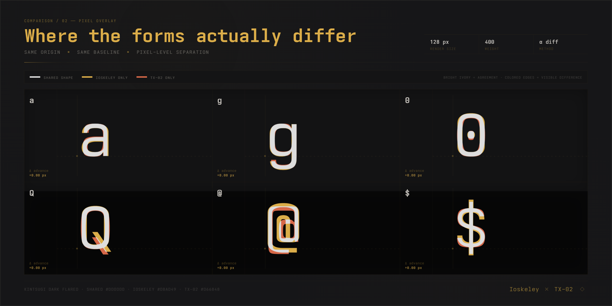

Ioskeley Mono
A free, open-source monospace font crafted to match Berkeley Mono's aesthetic. Built by configuring Iosevka. Two widths, ten weights, italic variants, and Nerd Font support. Iosevka + Berkeley = Ioskeley.
Open source · SIL OFL 1.1 — Browse on GitHub →Comparison with Berkeley Mono



const specimen = {
zeroes: [0xFC82, 100_000, 0.0],
glyphs: "g k r y Q @ $",
ops: ["!=", "==", "===", "<=", ">=", "=>", "->", "::", "&|"],
nested: "{ ( [ ] ) } * ^ -",
};
export const render = (q: Map<string, number>) => {
if (q.size != 0 && q.get("gkry") >= 0.0) return `Q::$${q.get("@$")}`;
return specimen.nested;
};const specimen = {
zeroes: [0xFC82, 100_000, 0.0],
glyphs: "g k r y Q @ $",
ops: ["!=", "==", "===", "<=", ">=", "=>", "->", "::", "&|"],
nested: "{ ( [ ] ) } * ^ -",
};
export const render = (q: Map<string, number>) => {
if (q.size != 0 && q.get("gkry") >= 0.0) return `Q::$${q.get("@$")}`;
return specimen.nested;
};Try It
Optical Size Waterfall
Engineered geometric rhythm and uncompromised hinting preserved across all display scales.
Download Packages
Not sure which file? Start with IoskeleyMono.zip.
IoskeleyMono.zip
Standard font package for code editors & IDEs. Full ligatures and full 10-weight axis.
Download TTF →IoskeleyMono-NerdFont.zip
Patched with Nerd Font v3 symbols for developer shells, Starship prompts, and Neovim.
Download Nerd Font →IoskeleyMono-Term.zip
Strict terminal spacing constraints for strict cell alignment in Kitty, Ghostty, and WezTerm.
Download Term →| File | Best for | Downloads | |
|---|---|---|---|
| IoskeleyMono-NL.zip | Apps that can't disable ligatures — Xcode | — | Download → |
| IoskeleyMono-NL-NerdFont.zip | Same, with Nerd Font icons | — | Download → |
| IoskeleyMono-Web.zip | Web / CSS — small subset, WOFF2 for @font-face | — | Download → |
| IoskeleyMono-Web-Full.zip | Web / CSS — full coverage (Greek, Cyrillic, long arrows) | — | Download → |
Editor & Terminal Setup
Copy-paste ready configs for your daily environment.
Weights Spectrum
Every weight available in Normal and SemiCondensed — each with a matching italic.
| Weight | CSS | Sample |
|---|---|---|
| Thin | 100 | The quick brown fox |
| ExtraLight | 200 | The quick brown fox |
| Light | 300 | The quick brown fox |
| SemiLight | 350 | The quick brown fox |
| Regular | 400 | The quick brown fox |
| Medium | 500 | The quick brown fox |
| SemiBold | 600 | The quick brown fox |
| Bold | 700 | The quick brown fox |
| ExtraBold | 800 | The quick brown fox |
| Black | 900 | The quick brown fox |
Glyphs & Symbols
Pangrams
Numerals & Punctuation
Ligatures & Operators
Box Drawing & Geometric Elements
Installation Guide
- Download and unzip
IoskeleyMono.zip - Open
Normal/Unhinted/(recommended for Retina / high-DPI Mac displays) - Select all
.ttffiles, double-click any font → Install Font, or drag them all into Font Book
- Download and unzip
IoskeleyMono.zip - Open
Normal/Hinted/(optimized for Windows ClearType / standard-DPI displays) - Select all
.ttffiles → Right-click → Install for all users
- Download and extract your chosen zip file
- Copy font files to user font directory:
mkdir -p ~/.local/share/fonts/IoskeleyMono cp Normal/Unhinted/*.ttf ~/.local/share/fonts/IoskeleyMono/ - Refresh font cache:
fc-cache -fv
Every package includes all widths and hinted/unhinted variants. Installing all files in your chosen folder exposes the complete 10-weight axis automatically.
Build from Source
Ioskeley Mono builds are fully automated via GitHub Actions on tagged releases. To compile locally:
# 1. Clone repository and upstream Iosevka
git clone https://github.com/ahatem/IoskeleyMono.git
git clone --depth 1 https://github.com/be5invis/Iosevka.git
# 2. Copy the customized build plan
cp IoskeleyMono/private-build-plans.toml Iosevka/
# 3. Install build tools and compile fonts
cd Iosevka
npm install
npm run build -- contents::IoskeleyMono contents::IoskeleyMonoTerm